From two counters on First Street to the oldest restaurant in Valencia County.
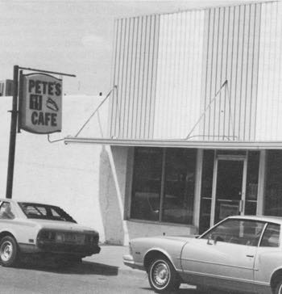
The original cafe on First Street
1949
A small, modest cafe opens
In October 1949 a young couple opened Pete’s on First Street, across from the Santa Fe Railroad: two long counters, red vinyl stools and bright red vinyl booths for family seating. The menu had breakfast, burgers and fries, and of course chile bowls.
1960s
A second dining room, a bigger kitchen
By the mid-60s Pete’s had grown, and the family began specializing in the food they were raised on: good ole beans, chile and enchiladas. Red and green chile became a daily task, made from the founder’s own mother’s recipe, still the recipe used to this very day.
Later
More than a diner
Working people from Belen, Los Lunas and the surrounding area came for lunch; families came to celebrate. Oven-baked carne adovada, crispy chile rellenos and shredded beef enchiladas joined the menu, and the new dining rooms filled with collected art.
Today
The Torres tradition continues
The Torres family and a dedicated staff still serve the “real thing”: authentic chile, red or green, over a choice of New Mexican entrées. We are grateful to our patrons and pledge to earn your continued patronage.
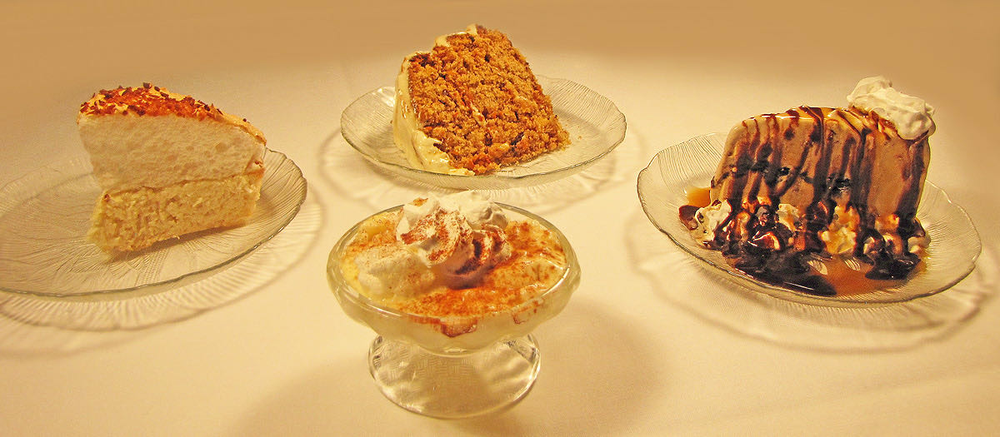
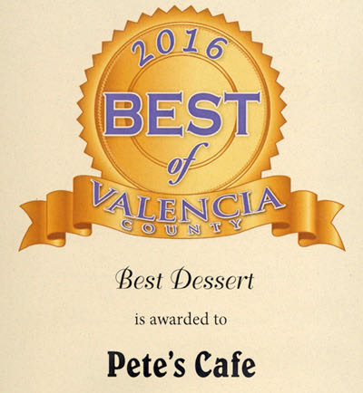
[05] Made in-house
Best of Valencia County 2016 — Best Dessert.
All our desserts are made in-house: natillas, flan, Pete’s Adobe Pie, carrot, chocolate and Italian cream cake, coconut and pineapple cream pie.
Relax, enjoy a perfect meal, and the art on the walls.
Each dining room was decorated with the art the family collected over the years. Bring your large dinner party to Pete’s and enjoy our personal service.
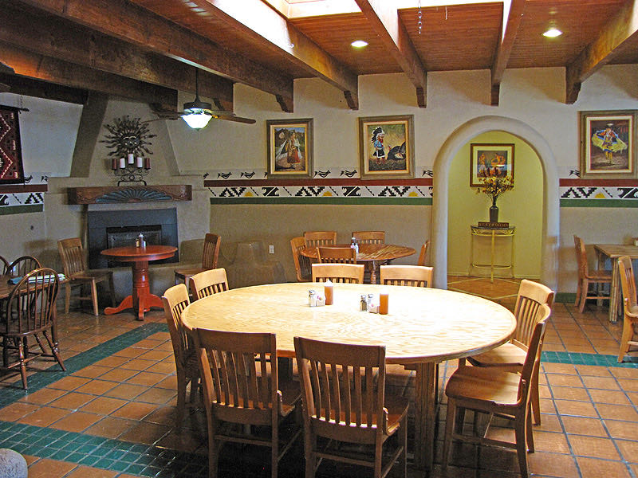
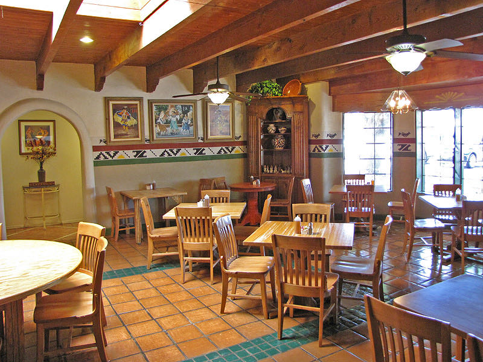
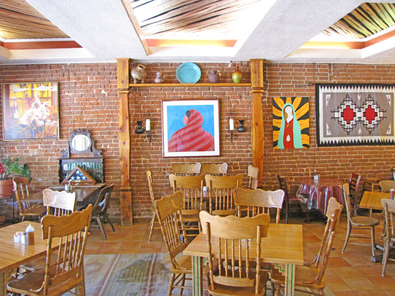
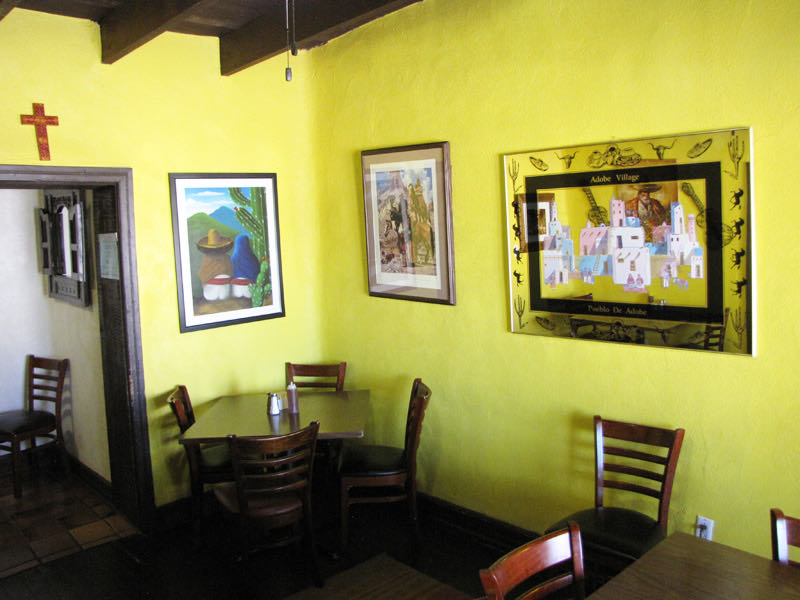
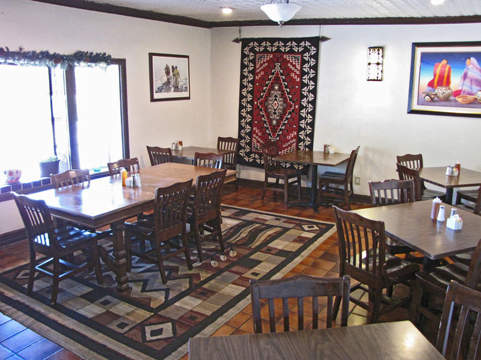
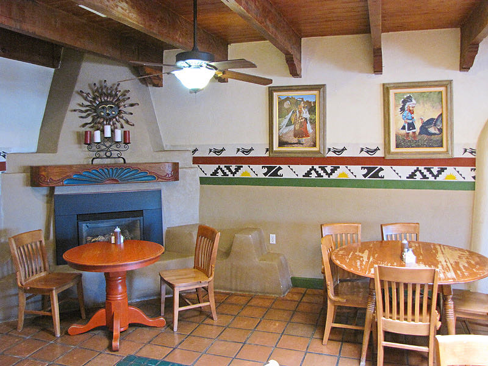
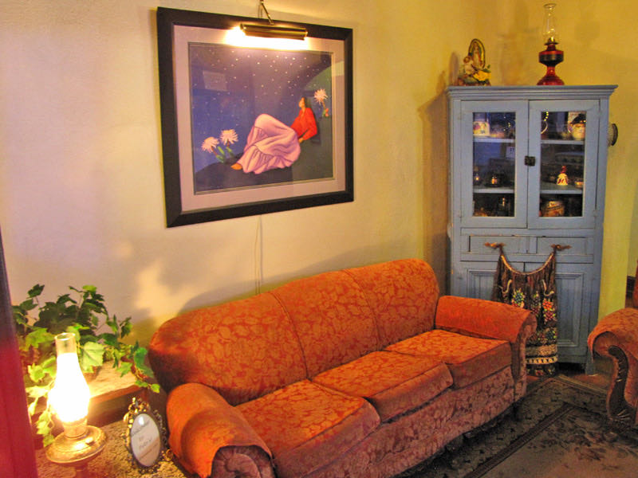
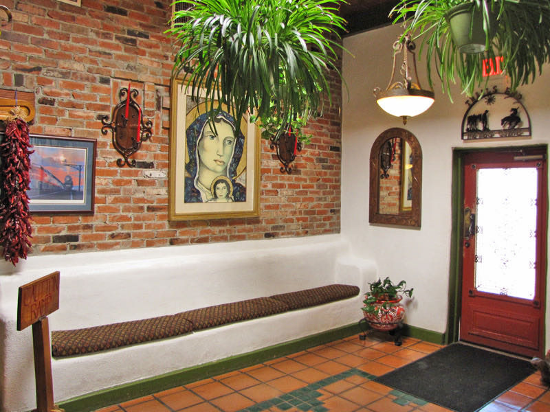
[07] Good to know
Questions
When are you open?
Tuesday to Thursday 11:00 am – 7:00 pm, Friday and Saturday 11:00 am – 8:00 pm, Sunday 11:00 am – 3:00 pm. Closed on Monday.
Do you have gluten-free or vegetarian chile?
Yes. A gluten-free vegetarian green chile is available with the dinners.
Can we bring a large party?
Yes, please do. Group tickets of 6 or more carry an automatic 15% gratuity; individual tickets for parties of 8 or more carry an automatic 20% gratuity. Send us the details below or call 505-864-4811.
Are there senior and children’s plates?
Yes. Senior plates (one rolled enchilada or one chile relleno with a side and a sopaipilla) and three children’s plates are on the menu.
Do you sell gift cards?
Yes, Pete’s Cafe gift cards are available. Call us or ask at the restaurant.
Do you have live music?
Occasionally. Local artists from the surrounding area perform mostly acoustic music. Call to ask what is coming up.
[08] Visit
105 N. 1st St., across from the Harvey House.
Pete’s Cafe is in Belen, NM, right across the street from the Santa Fe Railroad Harvey House. Having navigational issues? Give us a call.